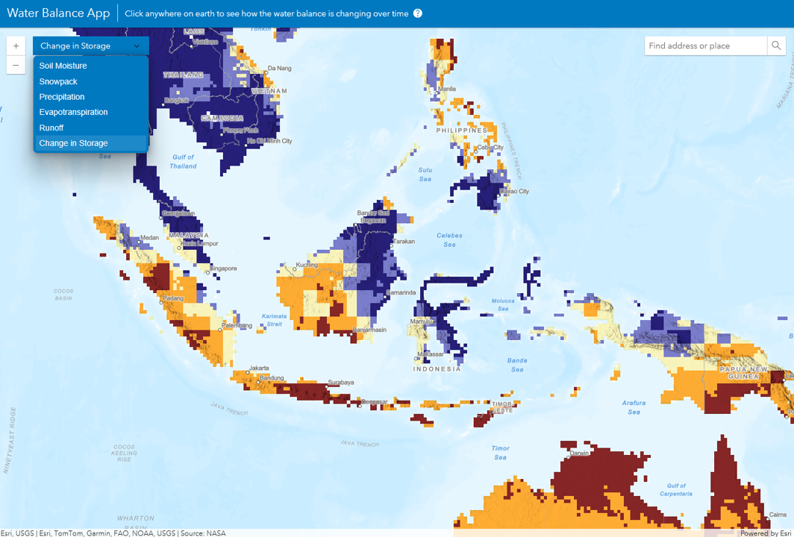
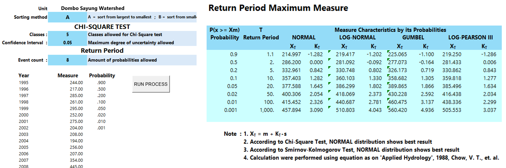
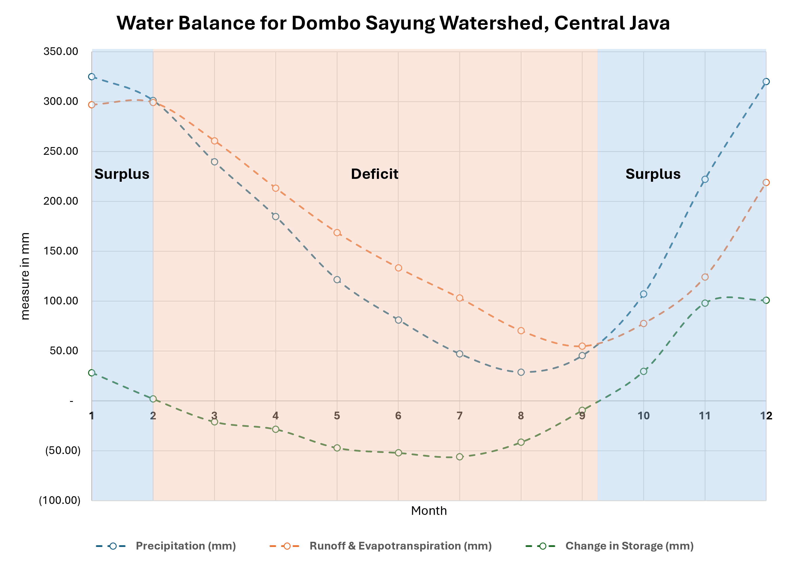

Meteorological Water Balance
Mon 15 Dec 2025 • 16:19 GMT by Spatiality

Change in Storage Distribution. Documentation by Spatiality
A meteorological water balance tracks the continuous hydrologic cycle and calculates the balance of water inputs and outputs within a specific landscape, typically watershed. Operates on the principle that the incoming water supply must equal the outgoing water depletes plus any change in storage. By evaluating variables such as precipitation, evapotranspiration, runoff, and soil moisture storage, this equation quantifies how moisture enters and leaves a system over time. Understanding these fluxes is essential for assessing ecological conditions, water availability for agriculture, and hydrological responses to climatic variables.
Utilizing ready to use platform like Esri Water Balance App, which leverages data models such as NASA's GLDAS—allows you to observe the dynamic hydrological variables seamlessly across regional extents. The application processes essential meteorological inputs like rainfall, evapotranspiration, soil moisture, snowfall, and runoff to calculate water balance. This spatial-temporal modeling provides critical baseline intelligence for tracking environmental dryness, recharge periods, and long-term trends in water resource availability.
Frequency Analysis

Data Input and Frequency Analysis. Documentation by Spatiality
To aggregate time series data (20 years) of monthly climate data, frequency analysis is performed to figure the probability event of climatic pattern. This statistical approach helps identify the recurrence intervals of wet and dry extremes, smoothing out short-term noise to reveal robust climatological baselines. By integrating these frequency-derived insights into your water balance evaluation, you gain a clearer, risk-informed perspective on how recurring precipitation regimes dictate dynamic soil moisture recharge and overall regional hydrological cycle.
When performing a frequency analysis to predict extreme rainfall, different statistical methods such as Gumbel, Log-Pearson, Normal, and Log-Normal distributions—try to fit your historical data curve, but each leaves a small margin of error. To get the most accurate estimate, you test all of them and select the method with the lowest error rate for your specific dataset. From there, using return periods or probabilities like 60% or 80% helps you estimate the likelihood of a certain amount of rainfall occurring or being exceeded in any given year, giving you a reliable statistical result for planning against dry or wet extremes.

Water Balance Chart. Documentation by Spatiality
In frequency analysis, probabilities like 60% and 80% (often referred to as exceedance probabilities for rainfall levels) represent how often a specific amount of water is expected to be met or surpassed. On the other hand, a return period looks at the same concept through the lens of time, the average interval of years between events of a certain magnitude. Here is how different probability thresholds apply across agriculture, infrastructure, and environmental mitigation:
- High Probability (60% to 80% exceedance / 1.25 to 1.5-year return period) Best for agricultural planning & irrigation baseline. At these higher probabilities, you are looking at "dependable rainfall"—amounts that you can reliably count on occurring in most years. This is ideal for routine farm planning, scheduling standard crop water requirements, or managing daily irrigation. It ensures you design for typical, recurrent conditions rather than extreme anomalies.
- Moderate Probability (20% to 50% exceedance / 2 to 5-year return period) Best for standard land development or infrastructure. This moderate setting represents standard design conditions, such as median rainfall or typical flood/drought cycles. It is commonly used for measuring field drainage, measurng standard farm ponds, or planning multi-season crop rotations. It balances economic cost against operational risk, ensuring systems can handle regular seasonal fluctuations without over-engineering.
- Low Probability (5% to 10% exceedance / 10 to 20-year return period) Best for heavy infrastructure & drought mitigation These thresholds target more severe, infrequent extremes (such as a 10-year or 20-year extreme drought or heavy rain). In environmental and water management—such as designing canal blocking structures for peatland rewetting or fire prevention mitigation—you need to ensure structures can withstand prolonged dry spells or heavy surges. Using these lower probabilities ensures your conservation interventions remain robust and functional even under stress-test conditions.